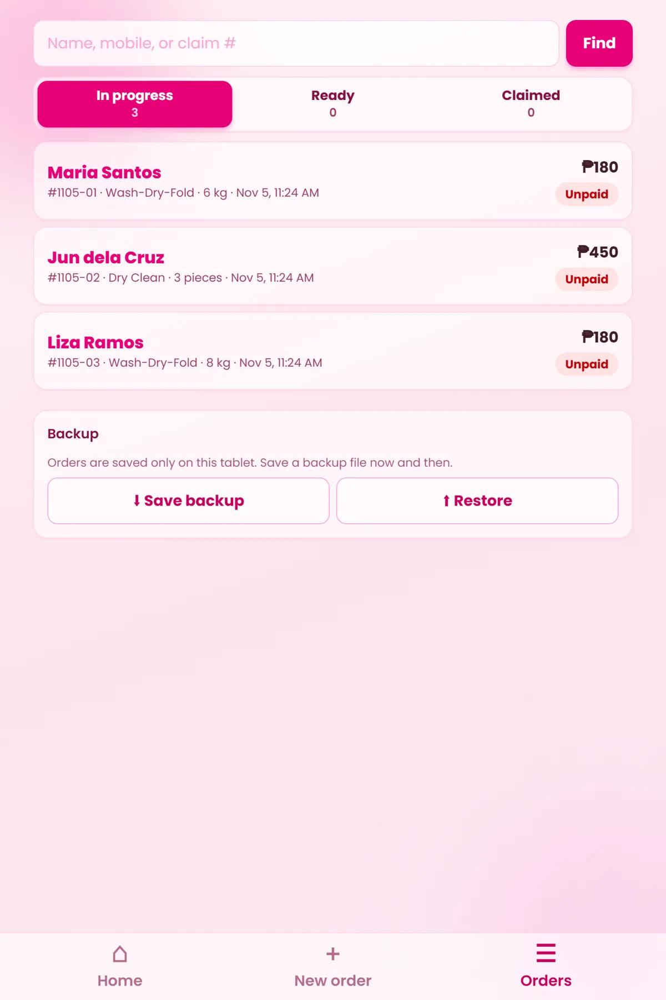
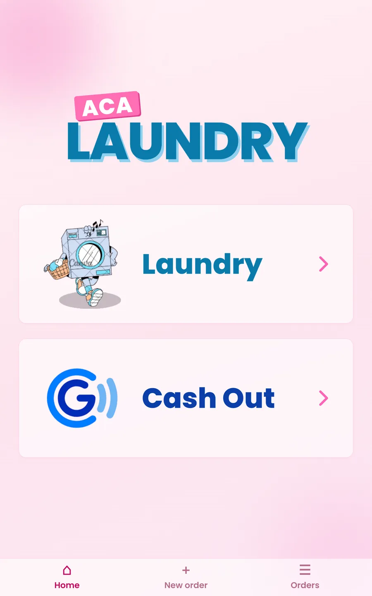
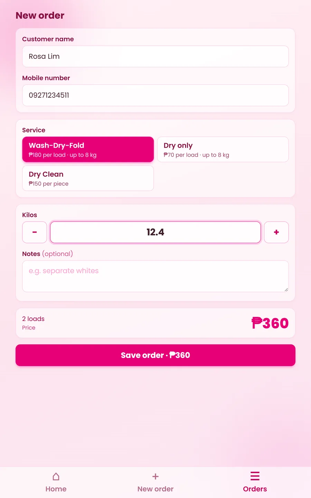
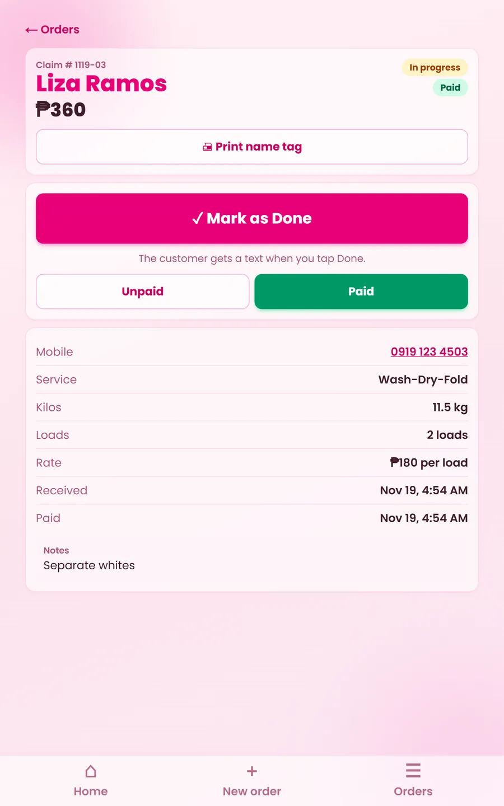
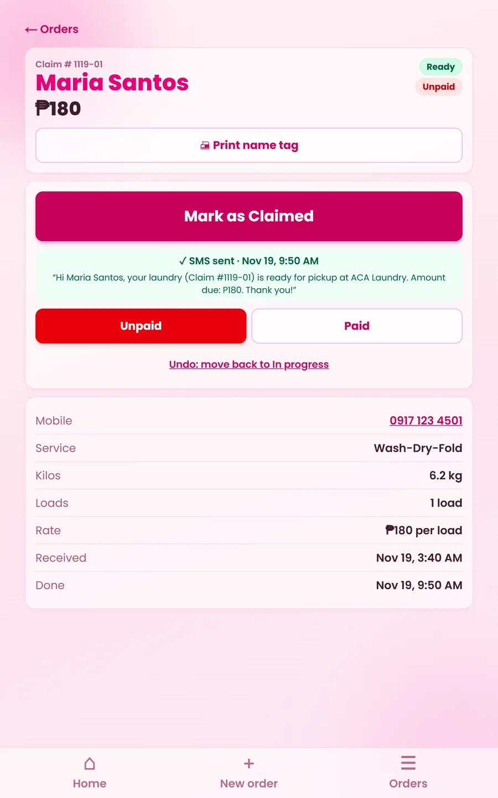
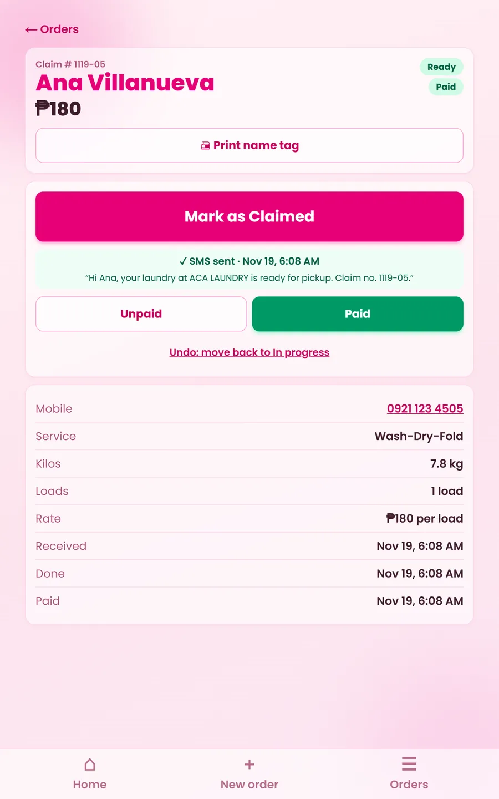
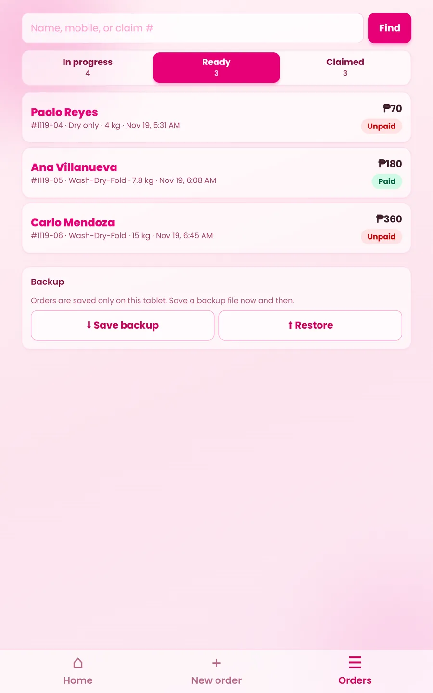
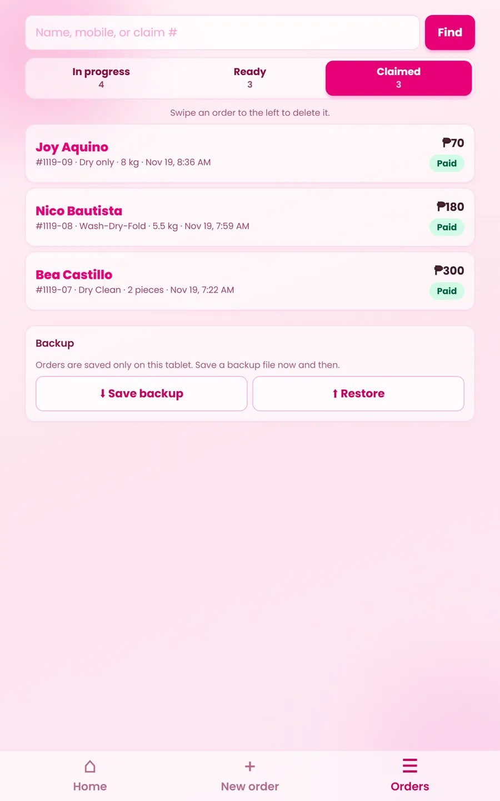

Orders tracked by hand. A lost order or a wrong total is money that's just gone.
The problem
What we did
A kiosk at the shop that logs every customer and every order. Built around how the laundry already runs.


From drop-off to pickup.





Home · new order with the price worked out · in progress · done and notified · ready for pickup · demo data


No more lost clothes. Every sale tracked.